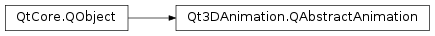

Qt3DAnimation.QAbstractAnimation¶
Inherited by: Qt3DAnimation.QMorphingAnimation, Qt3DAnimation.QVertexBlendAnimation, Qt3DAnimation.QKeyframeAnimation
Synopsis¶
Functions¶
- def
animationName() - def
animationType() - def
duration() - def
position() - def
setDuration(duration)
Slots¶
- def
setAnimationName(name) - def
setPosition(position)
Signals¶
- def
animationNameChanged(name) - def
durationChanged(duration) - def
positionChanged(position)
Detailed Description¶
An abstract base class for Qt3D animations
Qt3DAnimation.QAbstractAnimationis an abstract base class for all animations.Qt3DAnimation.QAbstractAnimationcan not be directly instantiated, but rather through its subclasses.PySide2.QtCore.QAbstractAnimationspecifies common properties for all Qt3D animations, such as animation name and type, current position and animation duration, while leaving the actual animating for the subclasses.
-
PySide2.Qt3DAnimation.Qt3DAnimation.QAbstractAnimation.AnimationType¶ This enumeration specifies the type of the animation
Constant Description Qt3DAnimation.QAbstractAnimation.KeyframeAnimation Simple keyframe animation implementation for PySide2.QtGui.QTransformQt3DAnimation.QAbstractAnimation.MorphingAnimation Blend-shape morphing animation Qt3DAnimation.QAbstractAnimation.VertexBlendAnimation Vertex-blend animation
-
PySide2.Qt3DAnimation.Qt3DAnimation.QAbstractAnimation.animationName()¶ Return type: unicode See also
-
PySide2.Qt3DAnimation.Qt3DAnimation.QAbstractAnimation.animationNameChanged(name)¶ Parameters: name – unicode
-
PySide2.Qt3DAnimation.Qt3DAnimation.QAbstractAnimation.animationType()¶ Return type: PySide2.Qt3DAnimation.Qt3DAnimation::QAbstractAnimation.AnimationType
-
PySide2.Qt3DAnimation.Qt3DAnimation.QAbstractAnimation.duration()¶ Return type: PySide2.QtCore.floatSee also
-
PySide2.Qt3DAnimation.Qt3DAnimation.QAbstractAnimation.durationChanged(duration)¶ Parameters: duration – PySide2.QtCore.float
-
PySide2.Qt3DAnimation.Qt3DAnimation.QAbstractAnimation.position()¶ Return type: PySide2.QtCore.floatSee also
-
PySide2.Qt3DAnimation.Qt3DAnimation.QAbstractAnimation.positionChanged(position)¶ Parameters: position – PySide2.QtCore.float
-
PySide2.Qt3DAnimation.Qt3DAnimation.QAbstractAnimation.setAnimationName(name)¶ Parameters: name – unicode See also
-
PySide2.Qt3DAnimation.Qt3DAnimation.QAbstractAnimation.setDuration(duration)¶ Parameters: duration – PySide2.QtCore.floatSets the
durationof the animation.See also
PySide2.QtCore.QAbstractAnimation.duration()
-
PySide2.Qt3DAnimation.Qt3DAnimation.QAbstractAnimation.setPosition(position)¶ Parameters: position – PySide2.QtCore.floatSee also
© 2018 The Qt Company Ltd. Documentation contributions included herein are the copyrights of their respective owners. The documentation provided herein is licensed under the terms of the GNU Free Documentation License version 1.3 as published by the Free Software Foundation. Qt and respective logos are trademarks of The Qt Company Ltd. in Finland and/or other countries worldwide. All other trademarks are property of their respective owners.